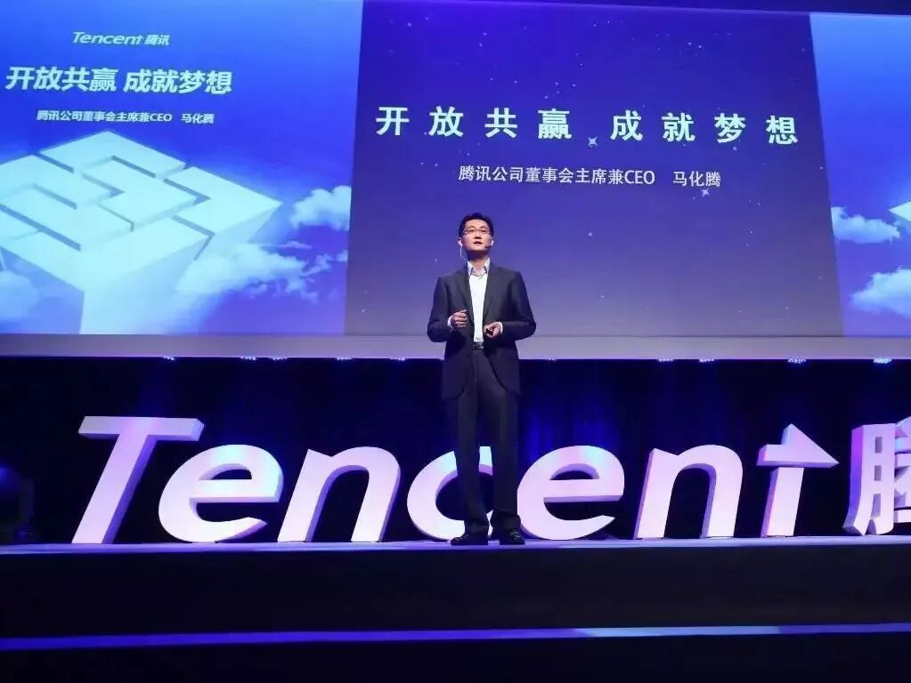
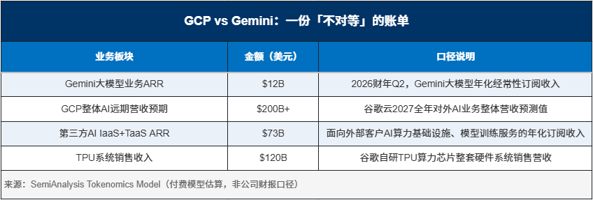
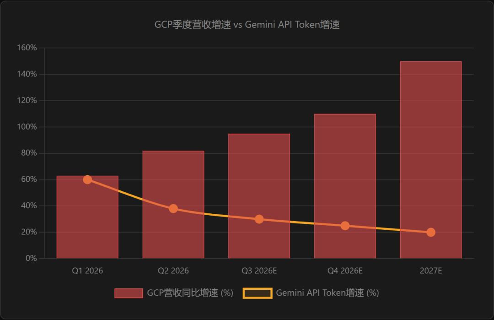
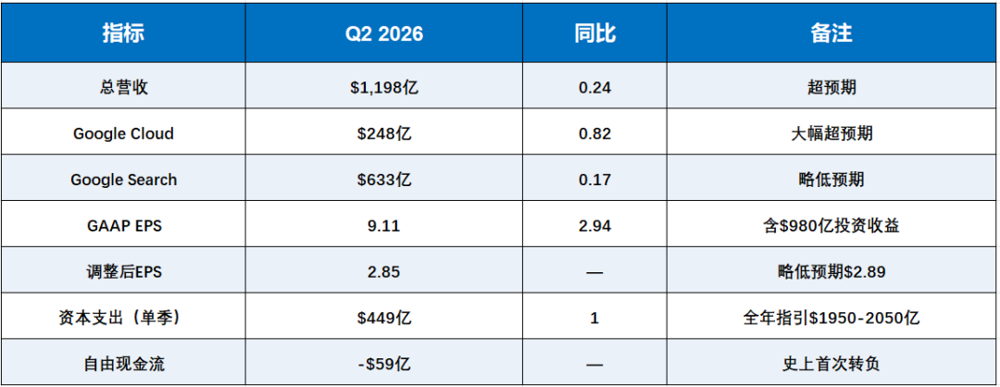
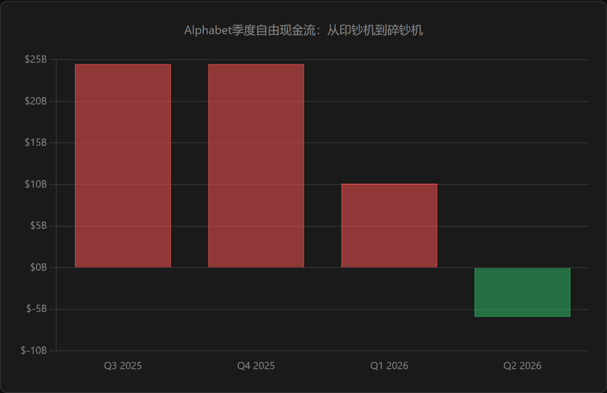
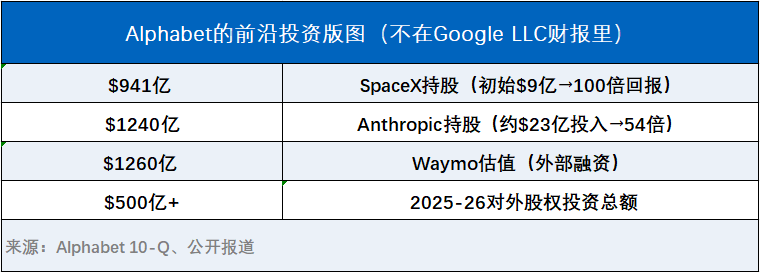
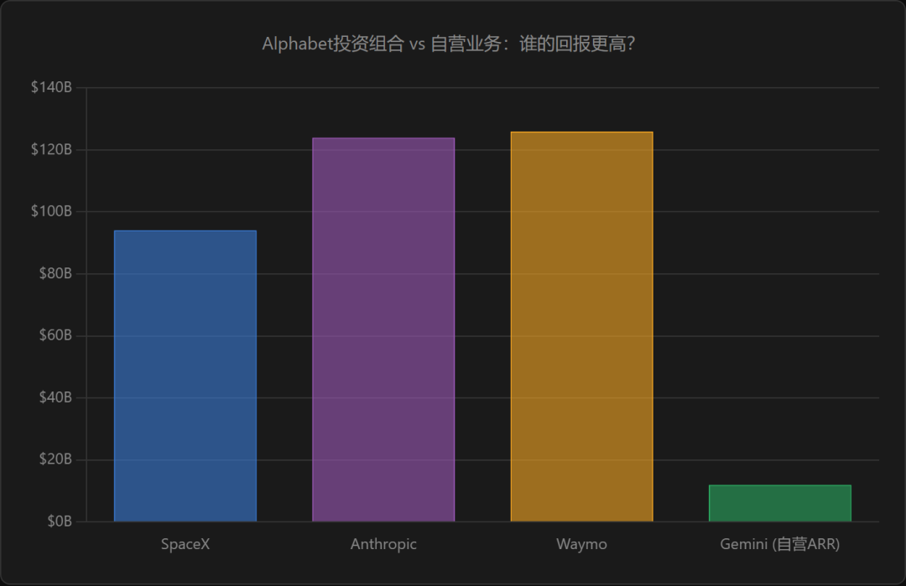

2018年5月，潘乱写了一篇《腾讯没有梦想》，说腾讯正在丧失产品能力和创业精神，变成一家投资公司。这篇文章刷屏了整个中国互联网，马化腾本人都出来回应。

八年后的今天，同样的故事正在硅谷上演——只不过主角换成了谷歌。
谷歌正在丧失前沿AI的信念，变成一家AI基础设施公司。它发明了Transformer，收购了DeepMind，启动了TPU项目，在ChatGPT诞生的一年前就做出了聊天机器人。但现在，它把算力卖给自己最大的竞争对手，让最顶尖的人才一个接一个离开，让旗舰模型Gemini跌出了全球前十。
只不过，谷歌跟腾讯有一个根本的区别：腾讯的投资是为了守住流量护城河，谷歌的投资是为了对冲自己无法在前沿领域执行的窘境。谷歌没有放弃梦想，它只是把梦想外包了。
一、DeepMind已不再是前沿实验室
8月5日，谷歌宣布对DeepMind领导层进行全面调整。消息本身并不复杂，但信号极其清晰：
Demis Hassabis，DeepMind联合创始人兼CEO，不再参与日常运营
Jeff Dean，在谷歌工作了27年的首席科学家、Google Brain联合创始人、TPU项目发起人，离职创办Discovery Loop
与Jeff Dean一同离开的还有Sanjay Ghemawat、Quoc Le和Oriol Vinyals——三位Google Fellow级别的核心研究员
DeepMind CTO Koray Kavukcuoglu接管日常运营，直接向皮查伊汇报
SemiAnalysis在报告中直言不讳：“从各方面来看，我们认为DeepMind已不再是一家前沿实验室。Google仍会继续发布模型，但他们再次达到业界领先水平（SOTA）的概率已降至零。”
这不是一朝一夕的溃败。把时间线拉长，谷歌AI的人才流失已经持续了两年多：
2021年 Noam Shazeer（Transformer核心作者）因谷歌拒绝发布其开发的聊天机器人Meena，第一次出走创办Character.AI
2024年8月 谷歌斥资27亿美元「买回」Shazeer，任命为Gemini联合负责人
2026年6月18日 Shazeer再次离开谷歌，加入OpenAI。至此，Transformer论文八位作者全部离开谷歌
2026年6月19日 John Jumper（2024年诺贝尔化学奖得主、AlphaFold核心领导者）离开DeepMind加入Anthropic
2026年8月5日 Jeff Dean——谷歌工程文化的象征、第30号员工——宣布离职。Demis Hassabis卸任日常管理
一位谷歌员工告诉记者，在公司内部，关于Jeff Dean的段子是工程师文化的一部分：有人说他写代码的速度超过别人阅读代码的速度；他每次编译代码前都不需要检查语法，如果编译器提示有错，那一定是编译器自己错了。
这些冷笑话背后，是Jeff Dean过去20多年对谷歌技术体系的真实贡献——MapReduce、Bigtable、Spanner、TensorFlow，随便拎一个出来都是改变行业的作品。他的离开，带走的是谷歌AI的半壁江山。
但最讽刺的不是谁走了，而是谷歌曾经拥有什么：
2017年，谷歌八位研究员发表了《Attention Is All You Need》，提出了Transformer架构。这篇论文后来被引用超过26万次，成为GPT、Gemini、Claude、DeepSeek——几乎所有现代大语言模型的技术基石。
2021年，DeepMind研究员Tibo的团队做出了一个叫LMChat的聊天机器人，比ChatGPT早整整一年。但谷歌太紧张了，不允许发布。
Tibo后来在X上写道：「Google was too nervous to release it and DeepMind was blocked from shipping products that could disrupt Google.」他于2024年7月离职加入OpenAI，现任Codex负责人。
发明了AI的公司，害怕AI颠覆自己——这跟腾讯当年在短视频领域的犹豫如出一辙。微视2013年就推出了，2015年解散，2017年关闭，那时候抖音日活还不到百万。
二、当CFO赢了AI战争
如果说DeepMind的衰败是“前端失血”，那么GCP的崛起就是“后端造血”。两件事其实是同一件事的两个面。
SemiAnalysis的报告揭示了一个关键的内部权力转移：过去Gemini和GCP为了算力分配拼死竞争，现在结论已经很清楚了——Thomas Kurian赢了。

2000亿美元的外部销售额，息税前利润率30%以上，对比Gemini第一方业务仅120亿美元——谷歌管理层用行动做出了选择：将GCP的短期金融化收益，置于前沿领域的长期竞争力之上。
更令人震惊的是谷歌把算力卖给了谁。从2026年第三季度到2027年第四季度，TPU总出货量的20%以上将直接出售给Anthropic。这还不包括GCP目前已经租给Anthropic的数十万颗TPU，以及已承诺在未来6个季度内租给Anthropic和Meta的数十万颗更多。
谷歌发明了Transformer，Anthropic用它来做Claude；谷歌花了27亿美元把Shazeer请回来做Gemini，然后Shazeer跑去OpenAI了；现在谷歌又把TPU卖给Anthropic，帮Claude训练得更快。
如果你听过Thomas Kurian的采访，你就知道他不是AGI的信徒。在一档播客中，他认为TPU成为支持Citadel、能源部和通用高性能计算的“通用基础设施”是件好事。当被问及为什么在Anthropic与Gemini竞争的情况下仍向其出售算力时，他说这是Google作为一家“平台公司”的必然结果。
这不是没有道理。但问题是：当一家公司的CFO赢了AI战争，它还是一家AI公司吗？

【图表】chart1
三、史上首次负现金流：花钱像初创，估值像老钱
2026年第二季度，Alphabet交出了一份“表里不一”的财报：

这组数据中最值得关注的是最后两行。Alphabet历史上第一次出现单季自由现金流转负。市场上最可靠的现金创造者，现在花的比赚的多。
而$9.11的EPS里，有$6.26来自投资组合的未实现收益——主要是SpaceX和Anthropic的持股升值。剔除这部分，谷歌“真实”业务的盈利能力其实远没有表面那么亮眼。
这跟腾讯2018年的处境有微妙的相似：当时腾讯的利润越来越多地来自投资收益而非主营业务，潘乱因此质疑它“变成了一家投资公司”。区别在于腾讯的投资是流量变现的逻辑，谷歌的投资是技术对冲的逻辑。

【图表】chart2
四、但谷歌并没有放弃梦想，只是外包了
这是谷歌跟腾讯最根本的区别，也是这篇文章必须说清楚的地方。
腾讯的投资逻辑是“社交流量变现”——把不核心的、不专业的项目通过投资交给别人，本质上是一种“创业税”。投京东、投美团、投拼多多，都是因为腾讯自己做不到，但可以用流量赋能。这些投资 defending 的是腾讯的社交护城河。
谷歌的投资逻辑完全不同。它投的不是「自己做不到的事」，而是「自己有信念但无法执行的事」。前沿技术，谷歌投了；而且投得极其凶猛：

让我们把这张清单展开：
Anthropic：Alphabet承诺投资400亿美元（首期100亿已缴），绑定TPU独家供给。持股估值约1240亿美元。讽刺的是，Anthropic的Claude正在用谷歌的TPU打败谷歌的Gemini。
SpaceX：2015年谷歌投了9亿美元，现在值941亿。100倍回报。SpaceX旗下xAI的Grok 4.6今天发布——这也是谷歌间接下注的AI赛道。
Waymo：2026年初外部融资160亿美元，估值1260亿。皮查伊说2027年开始对Alphabet财务有实质贡献。
Isomorphic Labs：Hassabis卸任DeepMind日常运营后，将专注这家用AI做药物研发的公司。
Discovery Loop：Jeff Dean离职创办的新公司，Alphabet提供资金和算力支持。用AI自动化科学研究的全流程。
GV + CapitalG + Gradient Ventures：三支基金管理超过80亿美元，投资了数百家公司，从AI编程工具到量子计算。
看到区别了吗？
腾讯投京东，是因为自己做不好电商；谷歌投Anthropic，是因为自己做不好AGI。前者是能力问题，后者是信念问题。腾讯缺的是执行力，谷歌缺的是那种“不撞南墙不回头”的religious conviction。
SemiAnalysis说得很到位：“Google的问题不在于Jeff Dean或Noam Shazeer，而在于其极其官僚、进展缓慢且战略胆怯的企业文化。”
所以谷歌做了一个理性的选择：既然自己跑不动前沿，那就投那些跑得动的人。把TPU卖给他们，把算力租给他们，用GCP赚他们的钱，再用GV投他们的股权。谷歌成了AI时代的军火商——同时持有战争双方的股票。

【图表】chart3
五、Gemini跌出前十，但Alphabet排第一
这就是「没有梦想的谷歌」的完整图景：
Google LLC（运营公司）：广告+搜索是现金牛，GCP是增长引擎，Gemini是……一个还在发布但已经没人期待的产品。Gemini 3.5 Pro一再推迟、始终未能面世，Gemini 3.6 Flash在Artificial Analysis智能指数上已跌出前十（约第21位），落后于Muse Spark 1.2、Grok 4.5甚至多款中国开源模型。DeepMind不再是前沿实验室。
Alphabet Inc.（控股公司）：持有SpaceX 941亿、Anthropic 1240亿、Waymo 1260亿。Q2 2026的投资收益980亿美元，超过了同期408亿的经营利润。对外股权投资超过500亿美元。它本质上已经变成了一家拥有搜索引擎的顶级风投基金。
Q2 2026那9.11美元的EPS，拆开来看：2.85美元来自“真实”业务，6.26美元来自投资收益。市场给谷歌的市盈率只有17.75倍——这已经不是一个成长股的估值，而是一个被当作价值股来定价的信号。
这合理吗？
从某种角度看，极其合理。如果Alphabet的AI策略不是“做最好的模型”，而是“做最好的AI基础设施+持有最好的AI公司”，那么它的护城河比任何一家实验室都深：
不管谁赢了模型竞赛，都需要买TPU——谷歌卖
不管谁赢了模型竞赛，都需要云基础设施——GCP提供
不管谁赢了模型竞赛，谷歌都持有它的股票——直接分享回报
这是一种“多头下注”策略。它的好处是几乎不可能输，坏处是也几乎不可能赢得最漂亮。
但从另一个角度看，这个策略有一个致命的隐含成本：人才。当最聪明的人发现谷歌不再追求AGI，而是追求GCP的利润率时，他们会选择离开。Shazeer走了，Jumper走了，Jeff Dean走了。下一个走的会是谁？
正如钛媒体那篇文章所说：“在AI领域，真正的护城河从来不是数据，不是算力，甚至不是模型架构本身。是那些愿意留下来、日复一日推进技术边界的人。而Google正在失去的，恰恰是这些人。”
结语
谷歌没有失去梦想。它只是把梦想从DeepMind的实验室，搬到了Alphabet的投资组合里。
从P&L的角度看，这无可厚非。Q2 2026投资收益980亿，比主营业务经营利润还高一倍多。SpaceX一笔投资赚了100倍，Anthropic的账面回报已经54倍。谷歌可能是华尔街最精明的投资者。
但从技术信仰的角度看，这是投降。一家发明了Transformer、收购了DeepMind、比OpenAI早一年做出聊天机器人的公司，最终选择把算力卖给竞争对手，然后坐收股息。这就像一个拥有最好的球员却拒绝上场的球队，转而在场外开起了博彩公司——稳赚不赔，但永远拿不到冠军。
2018年，潘乱问：腾讯还有梦想吗？
2026年，我们问：谷歌还有信念吗？
答案也许是：有，但不在Google LLC的财报里。它在Alphabet那行叫“Other income”的科目下，安安静静地躺着980亿美元的未实现收益。
那才是谷歌真正的梦想——一个被外包了的梦想。
对于投资者来说，问题不在于谷歌值不值得买——明年20倍PE、4.3万亿市值、GCP增速82%——而在于你买到的到底是什么。是一家AI公司，还是一个拥有搜索引擎的风投基金？
这两者的风险收益曲线完全不同。前者赌的是Gemini翻盘，后者赌的是整个AI赛道的总增长。谷歌选了后者，你呢？
1、每日港（A）股复盘，紧贴每天行情，时机在投资上永远最重要；
2、重要财经新闻的分析（包括中美日股市），主要针对它对企业/行业/股市形势的影响。
3、有价值的第三方报告+纪要分享，以供大家借鉴与学习参考。
4、每一周至两周一篇分析员的股票报告，深入剖析投资逻辑和基本面因素。
真是港股圈商务合作微信：Real_hk_manager
(添加好友请备注：公司+合作事项)
真是港股圈内容投稿：2458032576@qq.com